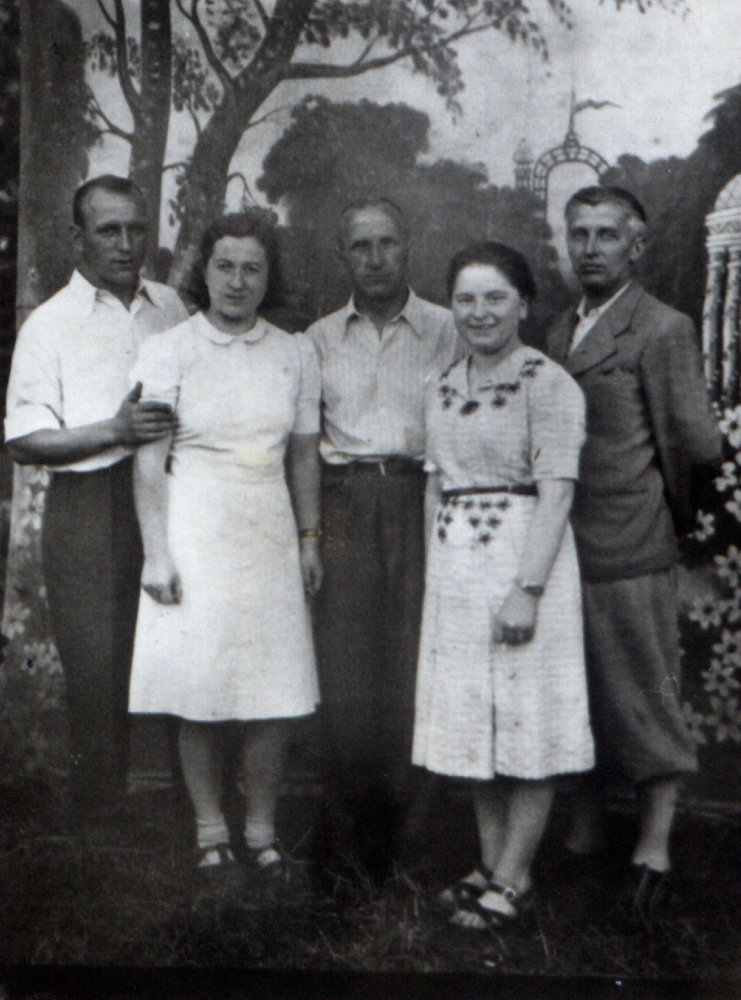
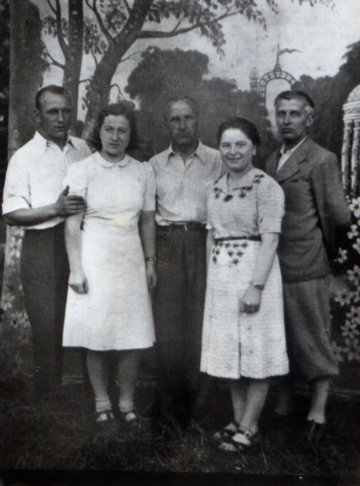

Halina Pietraszewska
 



Na wycieczce. Od lewej: Ewa Czechówna, Kamila Sawicka, Halina Pietraszewska, za nią Feliks Pietraszewski, obok niego znajomy Feliksa, oraz Zofia Buczkówna, dalsza krewna.
Halina Pietraszewska od urodzenia mieszkała przy ul. Grzegórzeckiej 12, w kamienicy swoich rodziców. Od wczesnej młodości pracowała w sławnej na cały Kraków piekarni. Potem stała się właścicielką rodzinnego interesu i prowadziła go samodzielnie aż do śmierci.
Mieszkanie Haliny Pietraszewskiej było przez wiele lat ośrodkiem życia rodzinnego. Nie było miesiąca, byśmy z moją mamą nie wsiadały do tramwaju numer 1 i nie jechały na Grzegórzecką 12. Tam zwykle spotykało się innych członków klanu. Najbardziej efektownym gościem była zawsze Ewa Czechówna. Ładna, zgrabna i modnie ubrana, bywała w świecie i umiejąca o tym świecie ciekawie opowiadać, na tle reszty rodziny była rajskim ptakiem.
W prowadzeniu domowego gospodarstwa pomagała Halinie długoletnia służąca Barbara. Nie była to osoba o anielskim usposobieniu, Kiedy gości było zbyt wielu, zaczynała gderać, bo to wiązało się z dodatkowymi pracami. Wtedy w kranach była tam tylko zimna woda, a żeby coś ugotować, trzeba było rozpalić w wielkim piecu kuchennym.
Goście zbierali się w kuchni. Prócz stołu, pieca, szafek i prostych witrynek, była tam też kozetka, na jakiej spała Barbara. We wnęce ukrytej za ceratową; zasłonką z czasem zjawiła się wanna.
Barbara starała się na wszelkie sposoby zniechęcić gości do przychodzenia, ale ja miałam jakieś fory u niej, bo kiedy tylko zjawiałam się w drzwiach, wyjmowała ogromną patelnię, w metalowej misce utrzepywała widelcem jajka na pianę,; dodawała cukru i smażyła dla mnie wielki, puszysty omlet. To był rytuał i nie pamiętam, by cokolwiek kiedykolwiek go zakłóciło.
Halina nie wyszła za mąż, lecz przez całe dorosłe życie związana była z Feliksem Pietraszewskim, kuzynem (jej ojciec i jego ojciec byli braćmi). Halina i Feliks otrzymali dyspensę na zawarcie małżeństwa mimo pokrewieństwa, lecz do ślubu nie doszło. Feliks mieszkał jednak z Halą w tym samym mieszkaniu. Zajmowali dwa różne (przechodnie) pokoje.
W młodości uchodzili nawet za parę idealną. Mówiło się o nich: Hala z Felkiem, Felek z Halą. Byli nierozłączni.
Parę musiały łączyć silne więzy, gdyż nigdy się nie rozstawali, choć - w starszym wieku - nieustannie kłócili.
Pamiętam, że ilekroć Halina przechodziła przez pokój, w jakim rezydował Felek, z łóżka rozlegało się mruczenie osoby nie do końca trzeźwej. Halina zwykle ignorowała te odgłosy, zapewne nie chcąc wywoływać przy gościach niepotrzebnych scysji. Ale nigdy się na niego nie skarżyła.
Była z pewnością osobą zamożną, ale żyła skromnie, bez przepychu. Miała niemal przez całe życie te same meble, a jej garderoba była modna inaczej.
Chętnie udzielała się rodzinnie. Przychodziła także do nas na domowe uroczystości, a w prezencie wręczała mojemu tacie wódkę, a mojej mamie i mnie czekoladki. Jedno i drugie robiło na nas wielkie wrażenie, bo było z Pewexu, za dolary!
Jeździła także na wycieczki, jakie gromadziły członków rodziny, ich krewnych i znajomych. Nie była jednak duszą towarzystwa, choć trudno by też było mówić, że była milczkiem.
Miało się wrażenie, że celem, sensem, osią i głównym zajęciem jej życia była piekarnia. Piekarnia Pietraszewskich przy ulicy Grzegórzeckiej 12 w Krakowie.